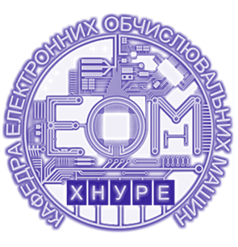

Завдання 1. Оформлений текст:
Общее количество перестановок из n элементов равно произведению всех целых чисел от 1 до n:
Pn=1•2•3•...•(n-2)•(n-1)•n
Завдання 2. Список дисциплін 3-го курсу, створений за допомогою списку визначень:
- IntТ
- Internet-технології
- Soft skills
- Soft skills:соціально-психологічні аспекти професійної компетентності
- АК
- Архітектура комп'ютерів
- ІССп
- Імідж сучасного спеціаліста
- ІМпк
- Іноземна мова для професійної комунікації
- КСх
- Комп'ютерна схемотехніка
- МПМКС
- Математичні пакети в моделюванні комп'ютерних систем
- МодС
- Моделювання систем
- СКБД
- Системи керування базами даних
- СПЗ
- Системне програмне забезпечення
- ФВ
- Комп'ютерна схемотехніка
Завдання 3. Періодична таблиця (фрагмент):
| Період |
Ряд |
I група |
II група |
III група |
IV група |
| 1 |
1 |
H (Гідроген) |
|
|
|
| 2 |
2 |
Li (Літій) |
Be (Берилій) |
B (Бор) |
C (Карбон) |
| 3 |
3 |
Na (Натрій) |
Mg (Магній) |
Al (Алюміній) |
Si (Силіцій) |
Завдання 4. Форма для вводу інформації про комплектуючі ПК:
Завдання 5. Зображення, при натисканні на яке відбувається перехід на сайт університету, сайт кафедри або розклад - в залежності від місця кліка:
